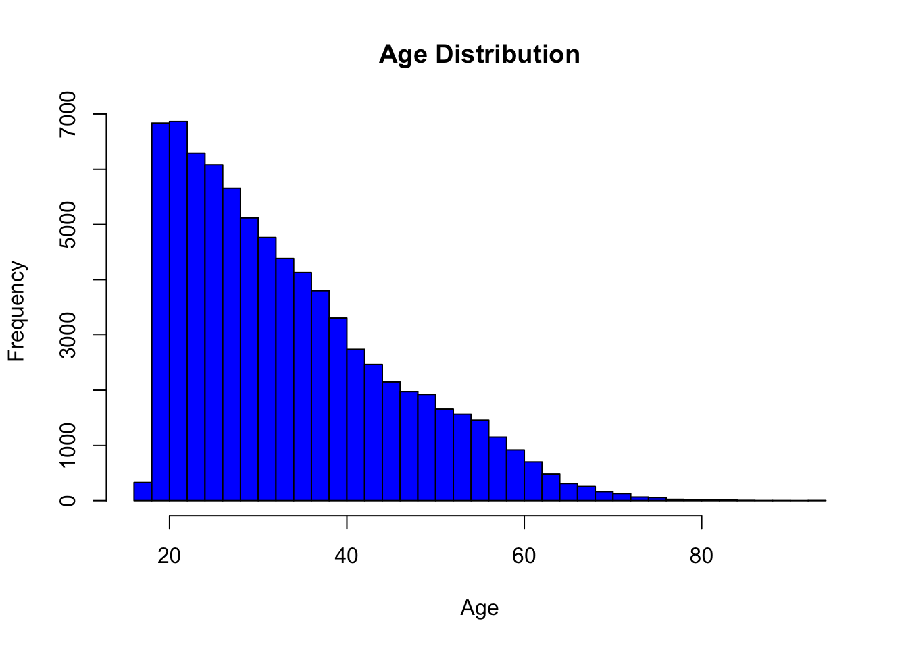

The dataset was obtained through a public records request from the Broward County Sheriff’s Office in Florida and analyzed by ProPublica. It includes COMPAS scores and relevant components utilized in score calculations. ProPublica enhanced the dataset by matching these scores with public criminal records, based on individual names and birthdates. Recidivism was defined according to Northpointe’s criteria, considering new criminal offenses committed within two years post-COMPAS assessment. Analytical methods applied include logistic regression and Cox proportional hazards models, aiming to evaluate the influence of various factors on scores and to compare predicted against actual recidivism rates.
Layout
Focus is placed on the compas-scores-raw.csv file from the GitHub repository, featuring 28 variables. Of these, eight are prioritized for analysis: individual_ID, Sex_Code_Text, Ethnic_Code_Text, DateOfBirth, Age, RawScore, DecileScore, and ScoreText. Variables have been recoded for clarity in subsequent analyses.
individual_ID: The unique identifier for each individual
Sex_Code_Text: Indicates the individual’s sex. We have re-coded this variable to Sex in the cleaned dataset.
Ethnic_Code_Text: Indicates a individual’s ethnicity. Possible values are Caucasian, African-American, Hispanic, Other, Asian, and African-Am. We have recoded this variable to Race in the cleaned dataset.
DateOfBirth: Indicates the individual’s date of birth
Age: The individual’s age, calculated from DOB during data cleaning.
RawScore: The individual’s raw COMPAS score. This is the raw score generated by the COMPAS algorithm and, in this dataset, ranges from -4.79 to 51.
DecileScore: The individual’s decile compas score. This score is generated by ranking individuals by their raw scores, dividing this ranked list into ten equal parts (deciles), and assigning a score from 1 to 10 to each individual based on the decile they fall into, effectively categorizing them into relative risk levels.
ScoreText: The individual’s categorized recidivism risk. Either Low, Medium, High, or N/A.
Cleaning and Loading
Below is the data cleaning script
library(tidyverse)
── Attaching core tidyverse packages ──────────────────────── tidyverse 2.0.0 ──
✔ dplyr 1.1.4 ✔ readr 2.1.5
✔ forcats 1.0.0 ✔ stringr 1.5.1
✔ ggplot2 3.4.4 ✔ tibble 3.2.1
✔ lubridate 1.9.3 ✔ tidyr 1.3.0
✔ purrr 1.0.2
── Conflicts ────────────────────────────────────────── tidyverse_conflicts() ──
✖ dplyr::filter() masks stats::filter()
✖ dplyr::lag() masks stats::lag()
ℹ Use the conflicted package (<http://conflicted.r-lib.org/>) to force all conflicts to become errors
library(lubridate) # For calculating COMPAS person's agecompas_data <-read_csv(here::here("dataset", "compas-scores-raw.csv"))
Rows: 60843 Columns: 28
── Column specification ────────────────────────────────────────────────────────
Delimiter: ","
chr (18): Agency_Text, LastName, FirstName, MiddleName, Sex_Code_Text, Ethni...
dbl (10): Person_ID, AssessmentID, Case_ID, ScaleSet_ID, RecSupervisionLevel...
ℹ Use `spec()` to retrieve the full column specification for this data.
ℹ Specify the column types or set `show_col_types = FALSE` to quiet this message.
## Clean the data# Calculate age based on DateOfBirth and Screening_Date# Convert date strings to Date objectscompas_data$DateOfBirth <-as.Date(compas_data$DateOfBirth, format="%m/%d/%y")current_year <-year(Sys.Date())compas_data$Age <- current_year -year(compas_data$DateOfBirth)compas_data$Age <-ifelse(compas_data$Age <0, compas_data$Age +100, compas_data$Age)compas_data_clean <- compas_data %>%select(Person_ID, Sex = Sex_Code_Text, Race = Ethnic_Code_Text, DateOfBirth, Age, RawScore, DecileScore, ScoreText) %>%drop_na()write_csv(compas_data_clean, file = here::here("dataset", "compas-scores-clean.csv"))save(compas_data_clean, file = here::here("dataset/compas-scores-clean.RData"))
The code executes the following operations:
Loads the data from compas-scores-raw.csv located in the dataset directory.
Formats the DateOfBirth field to mm/dd/yyyy, and the Screening_Date to mm/dd/yyyy hh:mm using the mdy and mdy_hm functions from the lubridate package.
Calculates the age of the individual by determining the difference in days between DateOfBirth and Screening_Date. The computed age is then stored in a field named Age.
Utilizes the tidyverse package to select only the relevant fields for analysis and to exclude any records with missing values.
Saves the cleaned data to compas-scores-clean.csv within the dataset directory.
Here is the visualization of cleaned COMPAS(1) dataset:
The dataset is provided by Iowa Department of Corrections, Iowa Correction Offenders Network, and it is used to create the Iowa probation recidivism annual report. This dataset contains deidentified case level records of individuals starting probation supervision in the community. Data begins with the FY 2016 cohort. It also provides an individual’s status at three years to assess whether probation was successful or whether the individual was reincarcerated. The dataset appears to detail recidivism among individuals released from prison, focusing on various demographic, legal, and post-release supervisory characteristics.
Layout
We decide to use this dataset to combine with the compas dataset, and we focused on the following four variables:
Race: The individual’s race or ethnicity.
Sex: The individual’s biological sex.
Age: The individual’s age at start of probation.
Reincarcerated: Indicator of whether the individual was incarcerated.
Rows: 73076 Columns: 29
── Column specification ────────────────────────────────────────────────────────
Delimiter: ","
chr (21): Race, Sex, Supervising Region Name, Work Unit Name, Jurisdiction, ...
dbl (6): Age, Cohort Fiscal Year, Report Fiscal Year, Time Served (Months),...
lgl (2): Under 18, Reincarcerated
ℹ Use `spec()` to retrieve the full column specification for this data.
ℹ Specify the column types or set `show_col_types = FALSE` to quiet this message.
sex race age reincarcerated
Length:73076 Length:73076 Min. :16.10 Mode :logical
Class :character Class :character 1st Qu.:23.60 FALSE:64259
Mode :character Mode :character Median :30.70 TRUE :8817
Mean :33.32
3rd Qu.:40.40
Max. :93.10
NA's :1
The code executes the following operations:
Loads the data from Iowa_Probation_Recidivism_Status_20240403.csv in our dataset directory
Selects the variables that we want to analyse and rename them in order to prepare for merging the dataset
Summarizes and provide a overview of the data in the cleaned dataset
Here is the visualization of the cleaned Iowa dataset:
This dataset is also used by ProPublica for analysing COMPAS algorithm and it contains two years of data from the Broward County Sheriff’s Office in Florida. In this dataset, there are more detailed information about the individual, including details like individual’s status at two years to assess whether the individual was reincarcerated.
Layout
To merge this dataset with the Iowa dataset in order to study the general trend in how sex, age, and race have an effect on recidivisim, we also select the following four variables:
race: The individual’s race or ethnicity.
sex: The individual’s biological sex.
age: The individual’s age at start of probation.
reincarcerated: Indicator of whether the individual was incarcerated.
# rename decile_score name (weird because of the index)colnames(compas_two_years_violent)[which(colnames(compas_two_years_violent) =="decile_score...40")] <-"decile_score"# keep only relative fieldscompas_two_years_violent <- compas_two_years_violent %>%select(sex, age, race, decile_score, score_text, reincarcerated)# Delete records with decile_score = -1compas_two_years_violent <- compas_two_years_violent %>%filter(decile_score !=-1)
The code executes the following operations:
Load the dataset and rename the field decile_score...40 to decile_score. Original data consists of the index number for decile_score field.
Keep only the relative fields: sex, age, race, decile_score, score_text and reincarcerated.
Delete the 5 useless records with -1 decile_score (Those records have a lot of N/A).
sex age race reincarcerated
Length:4743 Min. :18 Length:4743 Mode :logical
Class :character 1st Qu.:26 Class :character FALSE:3748
Mode :character Median :33 Mode :character TRUE :995
Mean :36
3rd Qu.:44
Max. :83
The code executes the following operations:
Loads the data from compas-scores-two-years-violent.csv in our dataset directory
Selects the variables that we want to analyse and rename them in order to prepare for merging the dataset
Summarizes and provide a overview of the data in the cleaned dataset
Here is the visualization of the cleaned COMPAS(2) dataset:
Merged dataset
The merged dataset combines data from Florida and Iowa, emphasizing variables such as sex, age, race, and incarceration status. A state indicator is added to each entry to specify its origin, facilitating comparative analysis across different jurisdictions.
sex age race reincarcerated
Length:77819 Min. :16.10 Length:77819 Mode :logical
Class :character 1st Qu.:23.80 Class :character FALSE:68007
Mode :character Median :30.80 Mode :character TRUE :9812
Mean :33.48
3rd Qu.:40.60
Max. :93.10
NA's :1
state
Length:77819
Class :character
Mode :character
Here is the visualization of the merged dataset:

R Packages Used
The analysis incorporated the following libraries beyond the curriculum:
lubridate: This library facilitated the calculation of ages, enhancing the accuracy of demographic analyses.
pROC: Employed for computing and plotting the Receiver Operating Characteristic (ROC) curve and the area under the ROC curve, providing insights into the predictive accuracy of the models.
gtsummary: Utilized to generate concise summary tables for the models, aiding in the clear presentation and interpretation of statistical results.